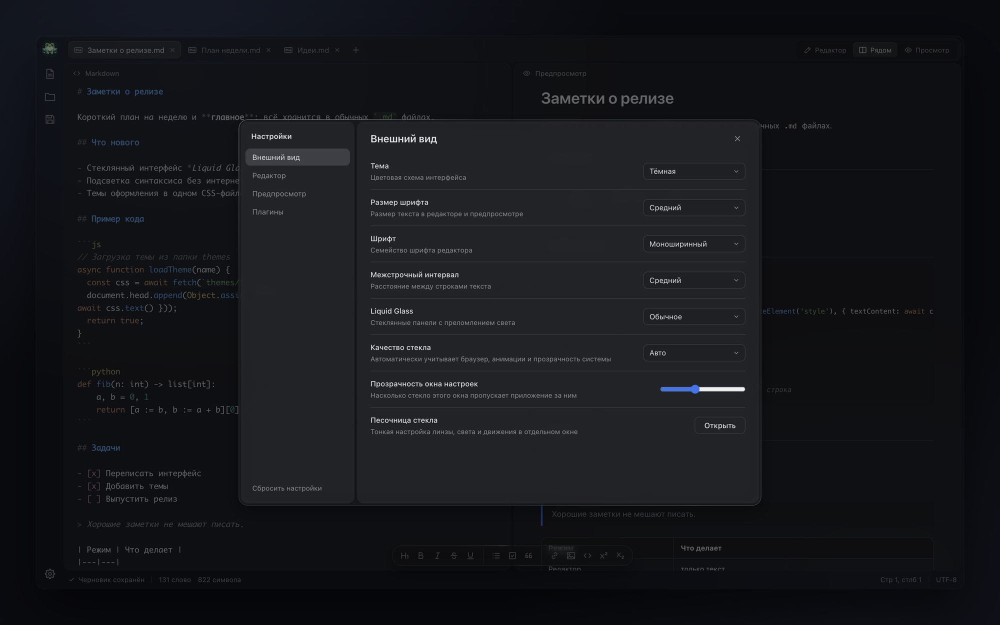
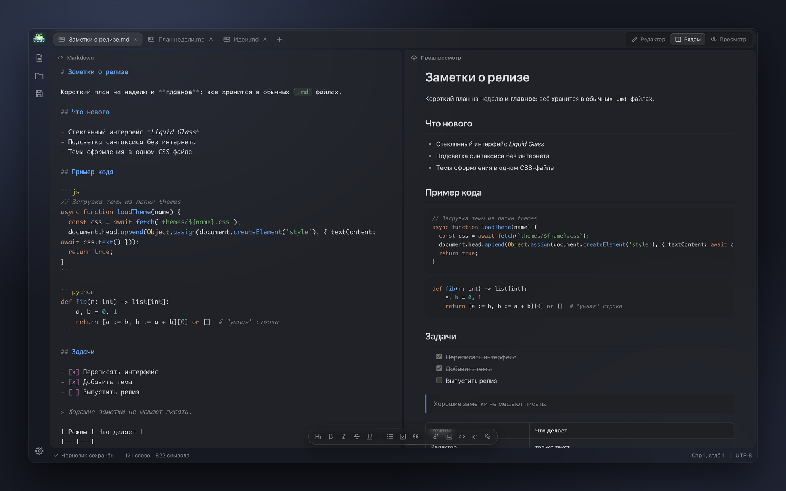
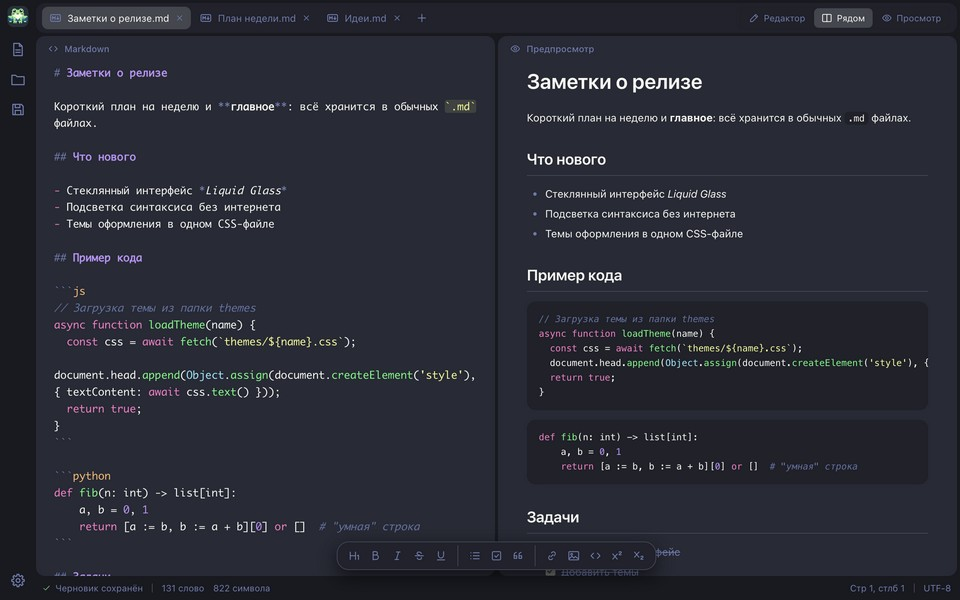
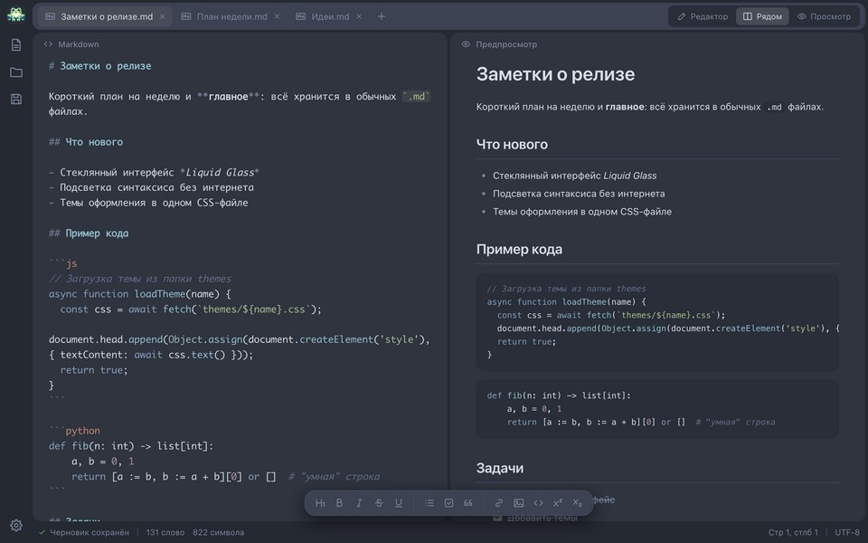
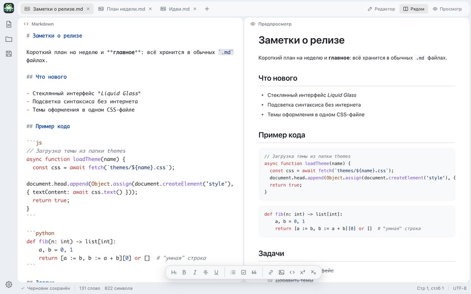
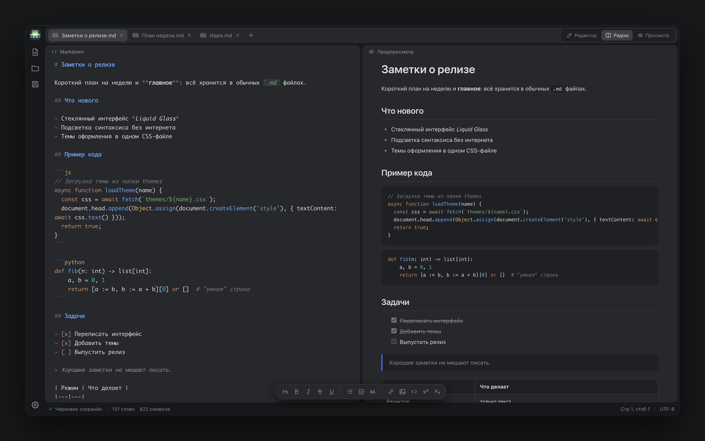
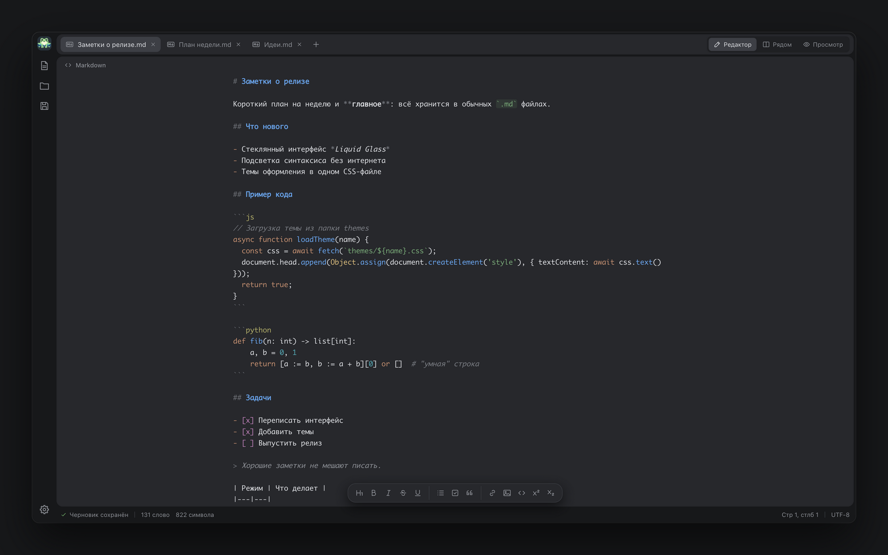
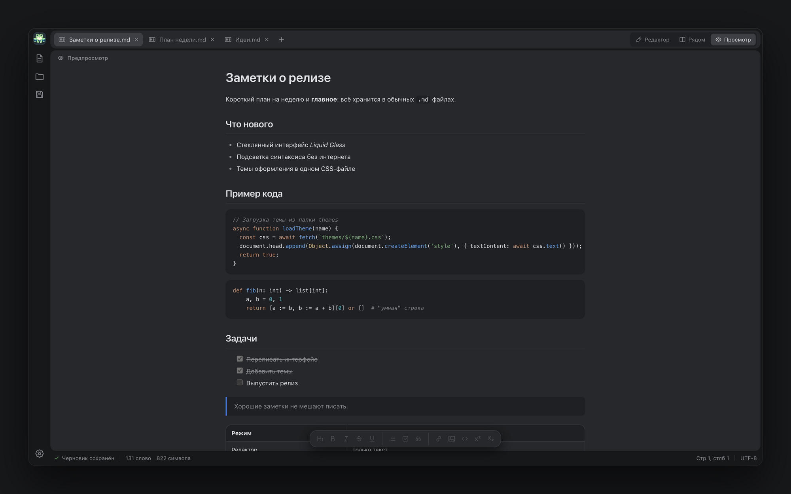
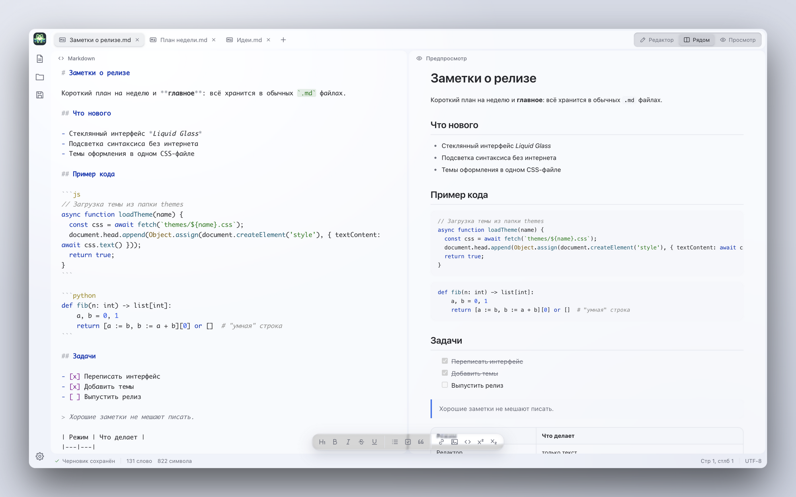

Стеклянное окно
Окно полупрозрачно целиком: сквозь него виден рабочий стол. У окна настроек есть ползунок прозрачности, стекло выключается в один клик.

FgSNotes открывает обычные .md файлы, показывает результат рядом и красиво подсвечивает код. Окно полупрозрачное, а оформление меняется одним CSS-файлом.

Окно полупрозрачно целиком: сквозь него виден рабочий стол. У окна настроек есть ползунок прозрачности, стекло выключается в один клик.

Markdown и блоки кода раскрашиваются прямо в редакторе: JS, Python, Go, Rust, SQL, JSON и другие.
// Подсветка прямо в редакторе
async function loadTheme(name) {
const css = await fetch(`themes/${name}.css`);
return Object.assign(el, { ms: 240 });
}Каждая идея в своей вкладке, черновики сохраняются сами.
Dracula, Nord, GitHub, Solarized и другие. Своя тема — один файл.



Открывайте и сохраняйте .md как есть: без облака и своего формата.
Основные действия без мыши.




Бесплатно. Версия 2.0.0, сборки лежат на странице релизов GitHub.
Сборки пока не подписаны. На macOS при первом запуске откройте приложение через контекстное меню → «Открыть». На Windows в окне SmartScreen нажмите «Подробнее» → «Выполнить в любом случае».